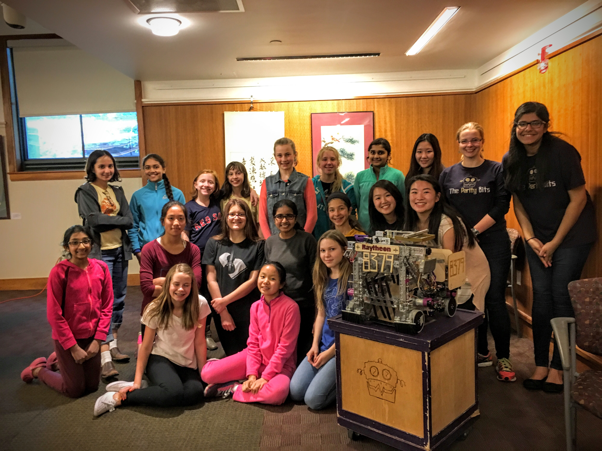

About Us!
ALL ABOUT US
Who We Are:
Lexington Girls Who Code is an educational club, whose mission is to educate middle and high school girls on coding, and the impact it has in our daily lives. We meet every Monday in Cary Memorial Library, which has graciously let us have our classes there every week. In this club, we not only learned how to code, but have become a close knit group after many weeks of continuously being challenged to learn new things.
What We Have Learned:
In the beginning, we used Codesters. Codesters is a website that allows users to drag> and drop code in Python(a computer programming language) , in order for us to learn basic skills. Once we decided that we were advanced enough to move off of drag and drop coding, we started using Khan Academy, in which we used JavaScript. Finally, as our last project to present to google, we made a webpage which you are on right now. We could not have been as successful in our learning as we are now without are three instructors; Danielle Bessette, Dave Zolotusky, and PK Shiu.
Women in Coding:
In a room of 25 engineers, only three will be women. (girlswhocode.com).
Women only make up 25% of the tech industry, but 57% of the work force. (blog.rangle.io)
With Girls Who Code, we are closing the gender gap in the technology industry week by week. Each week we had two presentations of famous women in the tech field. Some of the people included were, Grace Hopper, Marissa Meyer, and Ada Lovelace.
